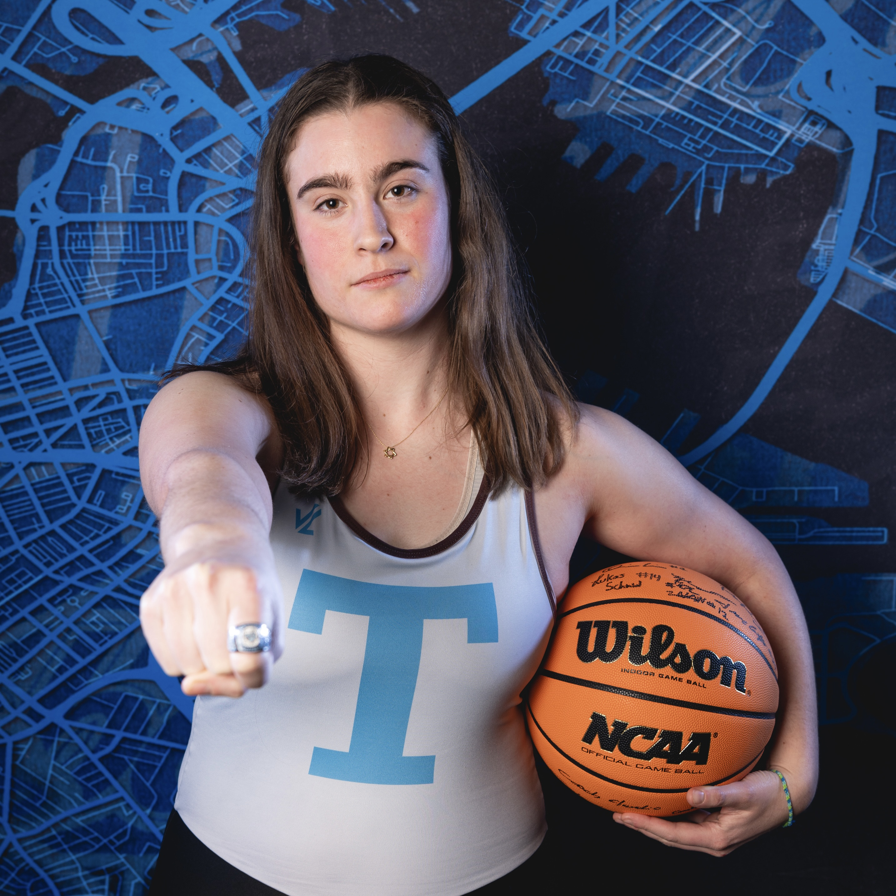
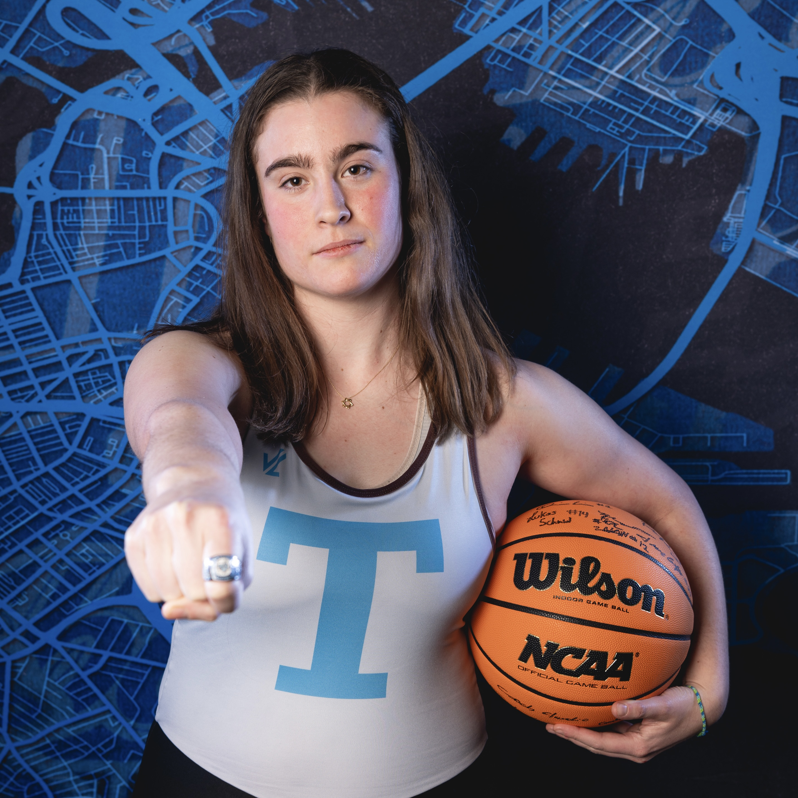

Jacqueline Kloner
Sports & Data Analytics Professional B.S Data Science & M.S. Computer Science (Tufts University)
Leveraging Data to Uncover Sports Trends
About Me
My name is Jacqueline Kloner, and my background is a unique blend of computer science, data science, and competitive athletics. I'm excited to join a company where I can apply my diverse skills to help an idea or vision grow.
I've been fortunate to gain real world experience through my internships as a Technology Intern at Xometry, an IT Data Analyst Intern at Boston Beer Company, and a Knowledge Management Intern at Jones Lang LaSalle.
Throughout these experiences, I've honed my passion for data. I love working with numbers and using them to find creative solutions to challenging problems. The numbers tell a story and help us make confident decisions, and I believe they are an unwavering source of truth.
While working with raw data can present challenges, I am driven to push past these challenges to achieve my ultimate goal. I've always sought the hard road and looked for the most complex problems to solve. This drive extends beyond my professional life. As a student, I've taken on a challenging workload in the engineering school while also being a member of the women's varsity rowing team, managing the men's basketball team, helping run the Tufts Hillel Board, and serving as the Director of Technology for Tufts TAMID. In athletics, I decided to walk onto the rowing team despite never having touched an oar before. I enjoy pushing myself and seeing how far I can go.
Taking the hard path as a student-athlete has taught me many things I will carry with me for the rest of my life. Sports equals teamwork, and teamwork is the key to success in any business. I come from a family of athletes and have been on multiple national championship-winning teams. I love the teamwork that comes with sports and hope to find this collaborative spirit in the workplace as well.
Professional Skills
Education
Tufts University - Medford, MA
- Accomplishments: Dean's List, Graduated Cum Laude, NCAA Division III Athlete (Women's Rowing), NCAA Division III Manager (Men's Basketball)
- Tufts University’s Fifth Year Masters Program. Anticipated graduation of May 2026 with a Masters of Computer Science.
Experience
- Jones Lang LaSalle - Knowledge Management Intern | Boston, MA June 2024 – August 2024
- Boston Beer Company - IT Data Analyst Intern | Boston, MA June 2023 – August 2023
- Xometry - Technology Intern | Virtual June 2022 – August 2022
Interests
Rowing, Basketball, New York Sports (Knicks, Rangers, Yankees), Travel, Baking, Exploring New Cities
Resume
Explore my resume below: Resume